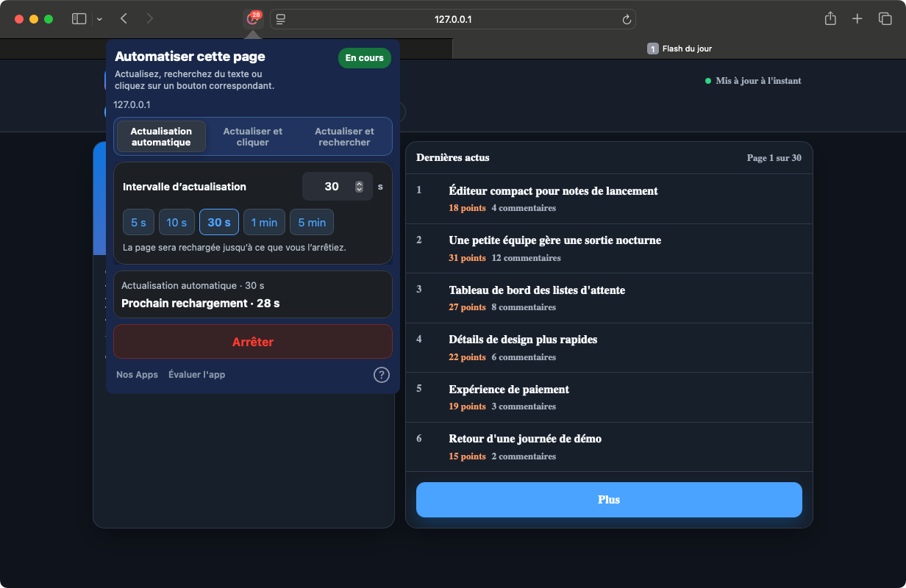
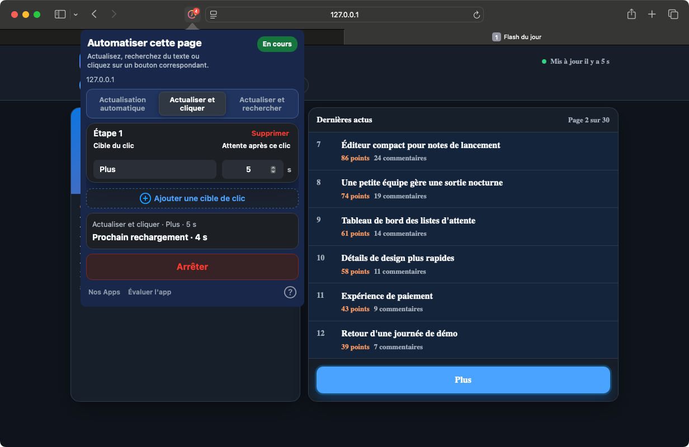
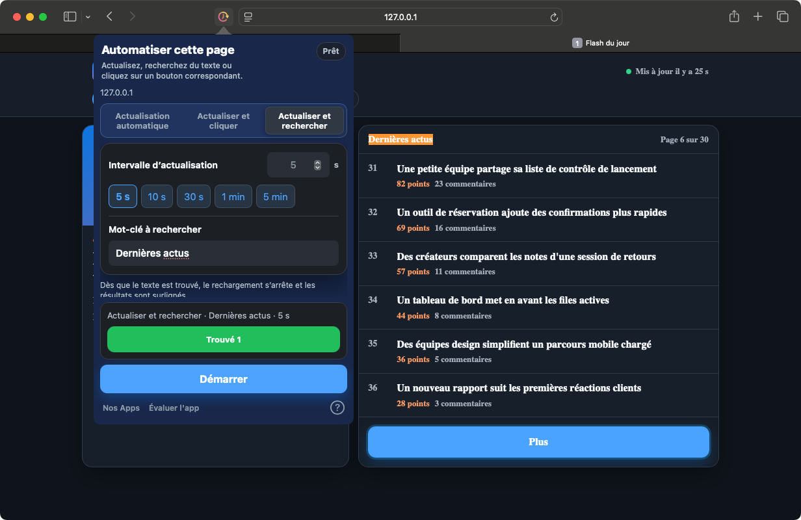

Actualiser
Choisissez un intervalle prédéfini ou précis pour garder vos tableaux de bord, stocks et suivis à jour.
Safari sur iPhone, iPad et Mac. Chrome sur ordinateur.
Actualisez à intervalle régulier, cliquez sur les boutons selon leur texte ou arrêtez l’actualisation lorsqu’un mot apparaît. Confiez les répétitions au navigateur.
Dans votre navigateur. Sans compte.
Voir le fonctionnement


Safari pour Mac 1.9.9 · Capture réelle d’une page de démonstration locale
Un tableau de bord qui évolue, un bouton à cliquer régulièrement : choisissez la tâche adaptée à votre page.
Choisissez un intervalle prédéfini ou précis pour garder vos tableaux de bord, stocks et suivis à jour.
Identifiez les boutons par leur texte. Ajoutez des étapes de clic dans l’ordre avec une attente après chaque étape.
Actualisez jusqu’à trouver le mot-clé. L’actualisation s’arrête et le texte correspondant est mis en évidence.
Quelques étapes, puis un état d’exécution facile à vérifier.
Ouvrez l’app après l’installation, puis activez l’extension dans les réglages Safari et autorisez l’accès au site.
Ouvrez la page et l’extension. Choisissez le mode, l’intervalle et le texte à rechercher si nécessaire.
Lancez la tâche et vérifiez son état et le compte à rebours. Arrêtez-la ou appliquez vos modifications à tout moment.
Aucun compte Web à créer. Les réglages sont stockés localement et les tâches sont gérées séparément par onglet.
Sur iPhone et iPad, gardez Safari au premier plan. Le système peut suspendre les tâches en arrière-plan ou lorsque l’appareil est verrouillé.
ConfidentialitéLes tâches s’exécutent sur des pages Safari ou dans l’extension Chrome pour ordinateur. Les autres apps et interfaces système ne sont pas contrôlées.
Ouvrez une fois l’app installée, puis vérifiez Réglages Safari → Extensions. Manifest V3 nécessite Safari 15.4 ou ultérieur. Si elle reste absente, contactez le support en indiquant les versions de macOS, Safari et de l’app, ainsi que la source d’installation.
Le fonctionnement continu en arrière-plan n’est pas garanti. iOS et iPadOS peuvent suspendre les tâches du navigateur. Gardez Safari au premier plan.
La version Safari actuelle permet de modifier la configuration puis d’appliquer les changements. Le résumé affiche la tâche active. Choisissez Arrêter pour la terminer.
Safari sur iPhone, iPad et Mac. Chrome sur ordinateur.
Consultez chaque boutique pour les prix et la compatibilité.